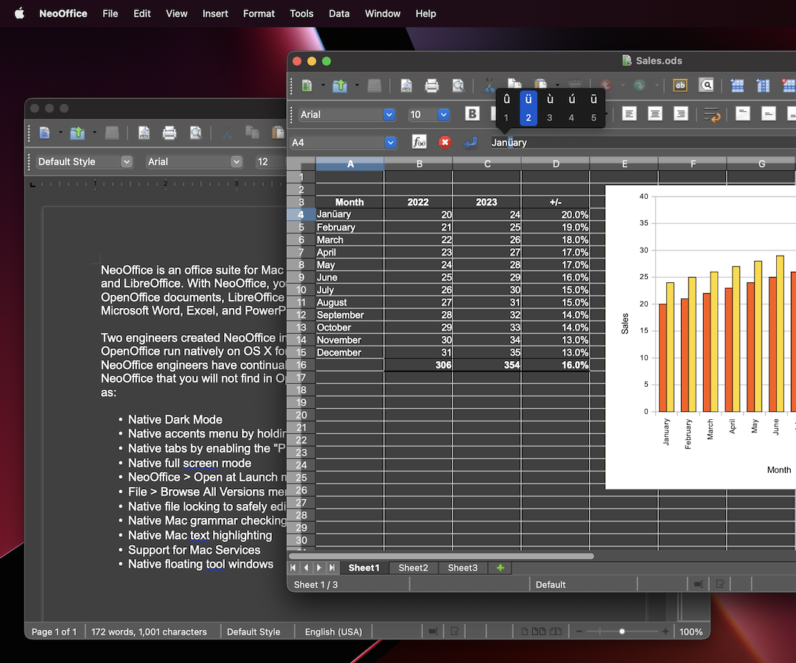

NeoOffice was an office suite for Mac that was based on old versions of OpenOffice and LibreOffice. With NeoOffice, you could view, edit, and save older OpenOffice and LibreOffice documents.
Two engineers created NeoOffice in 2003 when they made OpenOffice run natively on OS X for the first time. For nearly 20 years, the NeoOffice engineers added improvements to NeoOffice that you could not find in OpenOffice or LibreOffice such as:
- Native tabs by enabling the "Prefer tabs" system preference
- Native full screen mode
- NeoOffice > Open at Launch menu to open Calc or Impress instead of Writer at launch
- File > Browse All Versions menu to restore previous versions of your documents
- Native file locking to safely edit files in iCloud Drive, Dropbox, or network drives
- Native Mac grammar checking
- Native Mac text highlighting
- Support for Mac Services
- Native floating tool windows